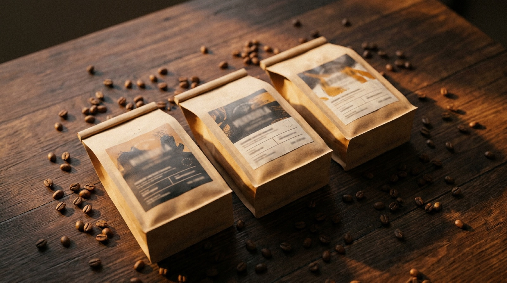
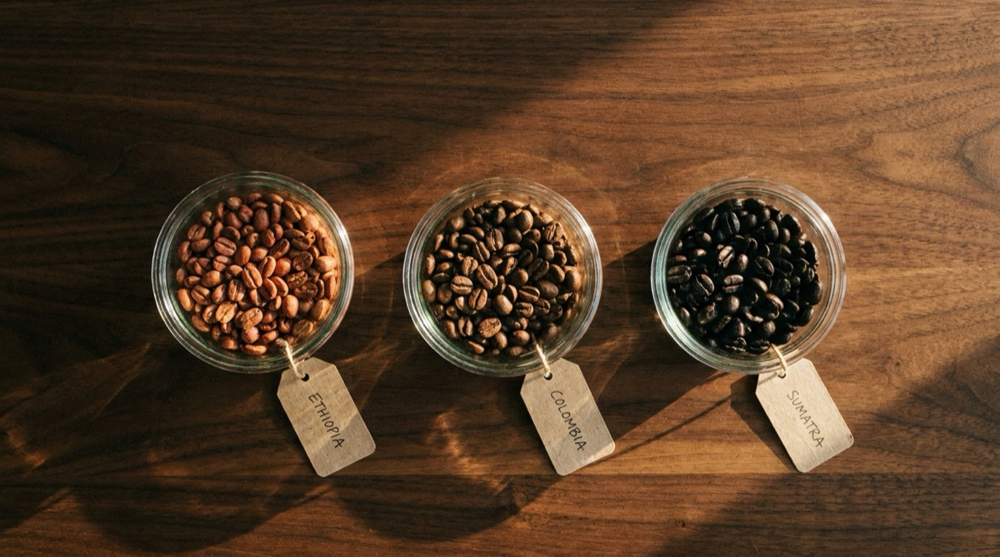
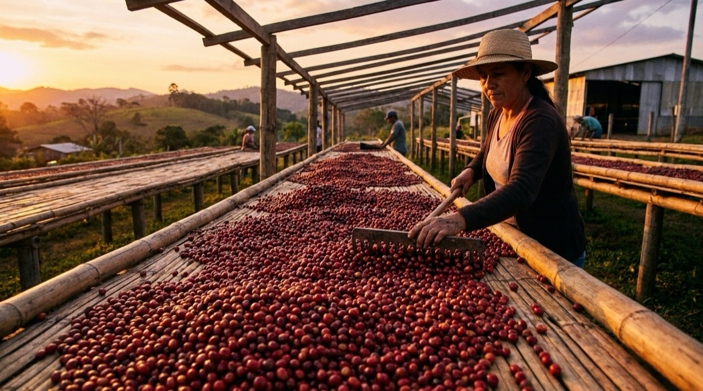

How to read a coffee bag: the specialty coffee buyer's guide.

If you were to look at a big old chart of the trajectory of specialty coffee, it would really be going in only one direction… up. Up through the ceiling, through the clouds and into the vastness of space. Way up.
There have never been more cafés and roasters offering specialty coffee — thankfully knocking out a few Starbucks, Costas and Java Joe's Cappuccino-whatever warehouses in the process.
One of the many things in specialty coffee on the rise is the consumption and brewing of high-quality coffee at home. Pushed by industry leaders like James Hoffmann and Scott Rao (and their YouTube videos — thanks boys), it has never been more attractive to learn how to brew at home.
Even with all these amazing-looking, amazing-sounding small-batch coffee roasters, choosing a great coffee to use at home can still be like finding a redeemable attribute in the Kardashians — not easy. Not easy at all.
Luckily, as with most things in life, armed with a little knowledge, we can have a pretty good idea of what the coffee inside the "oh so pretty bag" will taste like, before we even rip it open.
Warning signs in a coffee shop
Before we go deep, a few prerequisites — let's call them warning signs of what to look for (or what not to look for) in a coffee shop. These will hint at whether the establishment should be taken seriously.
Disclaimer: these tips don't always work, and some detectives with a keen eye may note they're rather superficial. But they've worked pretty well for me so far.
Run like a bat outta hell if:
- You see the words "dark roast" or even "medium to dark roast," or the beans look too dark or oily.
- You see the words "French roast" or "city roast" — or anything of that nature. Bail. God help us all.
- The shop has packages of pre-ground coffee sitting on the shelf. Nobody who believes in what they're selling will willingly offer that.
- The packaging of the coffee doesn't have at least the following information (or this information isn't made available to you): origin, varietal, growth elevation, process, tasting notes, roast date.
This one may be a little controversial, and does take some practice to spot, but hear me out:
If the store doesn't have industry-standard equipment that is kept immaculately clean, the cup probably won't be great either.
This is not to say that great coffee can't be made using cheaper equipment — of course it can. But like with any other craft, a master craftsperson uses master-craftsperson tools. Jiro Ono doesn't slice his salmon with a knife from Walmart. A true expert takes the craft seriously enough to invest in their equipment.
For industry-standard coffee equipment, we're looking for:
- Grinders: Mahlkönig, Mazzer, Nuova Simonelli.
- Espresso machines: La Marzocco, Synesso, Slayer, Victoria Arduino, Kees van der Westen, Modbar.
There are a few more, but these are generally considered the industry leaders. Almost without fail, good specialty coffee stores have these. (If you want to calibrate your own home setup, our grinder settings guide covers how to read any grinder's native scale.)
What the bag should tell you
You've done your cautionary checks, none of the issues above rear their ugly little heads, and we get to the glorious coffee bags. They look good. They're beautiful. There's a bunch of information on them.
Here's how to decipher what it all means, and how it translates to a delicious, mind-blowing, "the earth is a beautiful place" cup.
Origin
When we refer to origin, we're talking about where the coffee was grown and processed. This has a huge impact on the way the coffee tastes.
Coffee which comes from the same country will often have similar flavour attributes. Ethiopian coffees are commonly described as floral and tea-like, with a tropical fruit vibe and medium acidity — while coffees from another part of Africa, say Rwanda, will be richer, with more caramel, nougat and berry flavours happening.
This shared flavour happens for a couple of reasons. The first is a lovely French word with no direct English translation: terroir (pronounced teuh-waa).
Terroir is the land. The soil. The wind. The climate and the amount of rainfall the area gets. It's all the environmental factors and farming practices that affect the way a crop grows. Terroir affects the way a coffee tastes in the same way that what you feed your cows affects the way the milk tastes.
The second reason, and probably the bigger of the two, is that within a given region, similar varieties of crop are being grown. If I have a coffee farm in Kenya, it's reasonably likely that my coffee-producing neighbours and I will be growing the same varietals.
Which leads me nicely to the next section.

The varietals you'll actually see
Coffee variety refers to the specific cultivar of the Coffea arabica species — the species most widely found in specialty coffee.
Think about coffee varieties like fruit. Take an apple: there are around 7,500 varieties. Some taste similar. Others don't even look like the same fruit. Coffee is the same.
While terroir affects the way a coffee crop grows, each variety still has a number of trademark flavours present, almost regardless of origin. In any specialty coffee shop, you're likely to find — or at least I'm willing to bet — the following varietals:
Bourbon
Bourbon comes in a few varieties — Red, Yellow and Orange (sometimes called Pink). This is one of my favourites. These are pretty widespread: I've had amazing Bourbons out of Rwanda, and amazing Bourbons out of Honduras. They shared a similar flavour profile.
Tastes like: Caramel. Chocolate. Almond, nutty. Stewed pear. Mid-to-low acidity, big sweetness.
Catuai
Catuai is most common in Central and Latin America. It makes up around 50% of Brazil's coffee crops. Like Bourbon, it also comes in red and yellow, with flavours varying a little from colour to colour.
Tastes like: Caramel. Toffee. Apple-ish fruitiness. Chocolate. Sweet.
SL-28 & SL-34
SL-28 and SL-34 are almost solely grown in Kenya. To me, these two varietals are Kenyan coffee.
Tastes like: FRUITY. A big fruit bomb. Blackcurrants, blueberries. Sticky sweet, with a vibrant acidity.
Caturra
Caturra is a natural mutation of Bourbon, found most commonly in Central America.
Tastes like: Almond. Nutty. Pear. Stone fruits. Chocolate, brown sugar, caramel.
Gesha
Gesha — everyone's favourite coffee. Top-lot green Gesha regularly exceeds $1,500 per pound at auction (compared to around $100/lb for other varieties). It pulls its high price due to a genuinely unique flavour profile.
Tastes like: Jasmine. Rosehip. Very floral. Grapefruit. Delicate.
Heirloom varietals
Heirlooms are an interesting one, because there's no actual variety called "heirloom." It's the name we use (rightly or wrongly) to refer to many coffees coming out of Ethiopia, which we don't know — or can't say — the exact single variety of.
There are a couple of reasons we don't know. One is that the coffee may be growing wild: it's hard to track what variety is what when they're simply a mix and jumble of different trees. The other is that in Ethiopia, many coffees from the same town are brought to a central processing station or co-operative. There, they're all mixed and put together — meaning the bag is actually a blend of varieties with similar terroir.
Tastes like: Floral. Black tea. Stone fruits. Tropical fruits. Citrus and lime.

Processing
Processing refers to what happens with the coffee immediately after the cherries are picked and sorted. For coffee to end up as we know it — a hard bean — it needs to be dried. There are a few ways of doing this, and some impart more flavour on the beans than others.
Washed
Washed processing is exactly as it sounds. Ripe cherries are picked, sorted by weight, size and colour, then the seed is removed from the fruit and washed to get rid of the sticky mucilage (a honey-type substance) and parchment. The beans are then left to dry in the sun on raised beds or patios, with shade managed for even drying.
There's no outside factor adding to the flavour of the seed (other than eventual roasting and brewing). If I had to overgeneralise, I'd say washed coffees taste clean and transparent.
Natural
With natural processing, the coffee is harvested, sorted and then left to dry — fruit still attached. Because the fruit stays with the seed, a degree of fermentation occurs. The fruit imparts higher levels of sugar and impacts the flavour profile.
This flavour change can be positive, but more often than not is negative. Done well, a natural can be clean, intensely fruity, incredibly sweet, and oh-so-delicious. Done not-so-well, it can taste overwhelming, fermented, boozy, and overly jackfruity.
Some people love it. I find far too many naturals that have this general "natural" flavour, which I personally can't get into.
Natural processing is most common throughout Ethiopia and Brazil.
Honey
Honey processing is a sort of mix of washed and natural. And no, it doesn't taste like honey.
The coffee is picked and sorted like usual, then the cherry is fully removed but not fully washed — leaving only the sticky mucilage on the seeds. The seeds are then dried, usually in the shade so it happens more slowly.
Honey-processed coffees should contain very little perceivable fermentation, while gaining sweetness from the mucilage. The process can be done at varying levels: Black (the most mucilage), Red, and Yellow (the least). The higher the level, the sweeter but closer to a natural the coffee will taste.
The honey process is common in Costa Rica and other Central American countries.
Growth elevation
Spend some time looking — no, hunting — through specialty coffees, and you'll notice most good roasters publish the elevation at which the coffee was grown. You'll also notice the really high-quality coffees tend to be grown at 1,500 metres above sea level or higher.
Why?
It's to do with the amount of oxygen available at those altitudes. At regular sea level, the effective oxygen is around 21%. When we travel up to 1,800 metres, that number drops to almost 16.5%.
What does that mean for the coffee plants?
As the amount of oxygen decreases, so does the speed at which the crops can grow. Slower growth means a slower-developing fruit — giving the cherries more time to develop complex sugars and a denser fruit.
In short: higher-altitude coffees will be sweeter and have more depth. And this is a very good, desirable thing.
Roast degree
You can have an amazing green coffee, grown and processed perfectly. That coffee can arrive at a roaster and be very easily butchered — burned and destroyed. Sounds dramatic, but hear me out.
There's a saying (or general thought) in specialty: after the cherries have been plucked from the trees, everything we do to them only takes away from what's already locked inside. From processing to roasting to brewing. Nothing we can do will make them taste any better than they already do.
But those good flavour compounds don't develop until we roast. And we can't roast them without drying them. What we can do is not stand in the way of what's already there. In this case, that means optimal roasting. Light to light-medium roasts tend to be the best way of achieving this — allowing the true flavours to shine, without imparting roast flavours of their own.
When choosing a coffee, avoid dark, oily beans or beans that smell burnt, bitter, roasty, or have any chemical smell at all. If you want to go deeper on why this matters at the brewing stage, our guide to espresso extraction breaks down what's actually happening when water hits the grounds.
Roast date & the golden window
Coffee has an optimal period after roast when it tastes best.
Up to 5 days after a coffee is roasted, CO₂ gas that built up during the roast is released rapidly. Brewing coffee during this period — the degassing window — can have negative flavour effects. The coffee needs a little time to develop: to allow the gases to release and to settle. Excess CO₂ may also cause an uneven extraction, making the coffee taste bitter, burnt, or meaty on the over-extracted end — or overly acidic, grassy, and weak on the under-extracted end.
After the degas period, oxidation begins. Oxidation makes the beans lose their flavour and go stale. As long as the beans are kept whole (until right before brewing, of course), this happens pretty slowly — and the coffee will stay tasty and delicious for a month or two, sometimes more.
The golden window. The coffee goldilocks zone. The optimal flavour window is between 5 and 15 days. Having said that, some coffees — like the Laurina variety — tend to taste better at around one month post-roast.
For a deeper dive on storage, freezing, and post-opening care, our coffee bean freshness guide covers the full picture.
Bonus: the farmer's or producer's name
This is just nice.
It shows the roaster actually knows exactly where the coffee is coming from. It's also lovely to be able to put a name — and often a farm and a face, if the roaster provides photos (and many do) — to the delicious coffee you're drinking.
It feels, in a way, that it completes the circle: from crop to cup. Knowing by name each person involved in the chain — it just makes each cup that bit more special.
Log every bag. Spot the patterns that work for you.
Extraction tracks the beans you buy, when you opened them, your brews and what they tasted like. Over time you'll know which origins, varietals and processes work for your palate. Free trial.
Download on the App StoreNow go forth, armed with this knowledge. Enjoy coffee in a different way. Appreciate it as a treasure, not a commodity. With the world consuming more of it, and with the effects of climate change negatively affecting growers and growing regions, we may not — and almost definitely will not — have this forever. May your coffee be sweet and your house's smell be the envy of all your friends and neighbours.
Frequently asked questions
At minimum: origin (country + region), varietal, growth elevation, process, tasting notes, and roast date. If a roaster doesn't publish these, treat it as a warning sign — good roasters are proud of their sourcing and want you to know it.
Terroir is the combination of environmental factors — soil, climate, elevation, rainfall, and farming practices — that shape how a coffee tastes. It's why coffees from the same region tend to share flavour attributes.
Washed coffees taste clean and transparent. Naturals are sweeter, fruitier, sometimes fermented and boozy. Honey sits in between — added sweetness without full natural funk.
Lower oxygen at altitude slows plant growth. Slower-growing cherries develop more complex sugars and denser fruit. That translates to sweeter, more layered cups. Most quality specialty coffee is grown at 1,500 m or higher.
5 to 15 days post-roast for most coffees. Before day 5, the coffee is still degassing. After about two months, oxidation flattens flavours. Some varieties, like Laurina, peak later — around one month.
Gesha (or Geisha) is a prized Ethiopian-origin varietal known for a distinctive jasmine, rosehip, and grapefruit profile. Top lots regularly exceed $1,500/lb at auction.